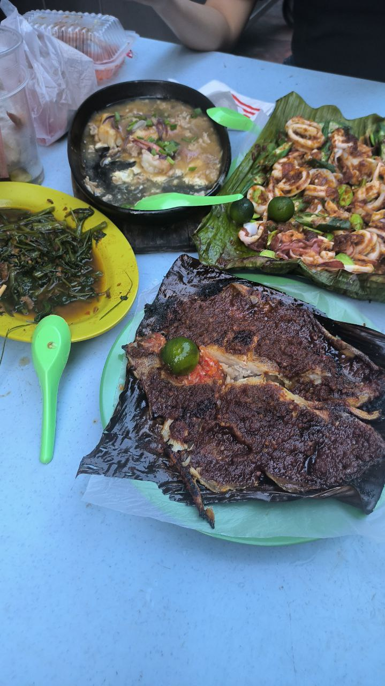

Ikan Bakar

Description
Ikan means fish. Bakar means grilled.
Ingredients
- 450g fish fillet or whole fish (you can use red snapper)
- Sambal
- Tumeric powder
- 1 bunch banana leaves
- Juice from 1 calamansi lime
Steps
- Take a few sheets of banana leaves and grease the surface with oil. Lay the fish on top of the banana leaves and rub on both sides with turmeric powder. Add 2-3 tbsp of sambal on top of the fish, spreading evenly. Drizzle with lime juice.
- Place fish on upper rack of grill (indirect heat) and cover. Grill for 8 minutes then flip.
- Add 2-3 more tablespoons of sambal on top of the fish. Cook for another 8 minutes.
- Transfer fish and leaves to lower rack of grill and grill for 2 more minutes with direct heat.
- Serve with sambal belacan and sliced shallots. Enjoy!
Credits
This recipe is heavily summarised from Rasa Malaysia, which provides more detailed instructions on how to actually make the dish.